10.1 Food Plants
10.2 Spices and Condiments
10.3 Fibre
10.4 Timber
10.5 Latex
10.6 Pulp wood
10.7 Dye
10.8 Cosmetics
10.9 Traditional system of medicines
10.10 Medicinal plants
10.11 Entrepreneurial Botany
The land and water of the earth sustain a vast assemblage of plants upon which all other living forms are directly or indirectly dependent. Pre-historic humans lived on berries, tubers, herbage, and the wild game which they collected and hunted that occupied whole of their time. Domestication of plants and animals has led to the production of surplus food which formed the basis for civilizations. Early civilization in different parts of the world has domesticated different species of plants for various purposes. Based on their utility, the economically useful plants are classified into food plants, fodder plants, fibre plants, timber plants, medicinal plants, and plants used in paper industries, dyes and cosmetics. Selected examples of economically important plants for each category are discussed in this chapter.
Currently about 10,000 food plants are being used of which only around 1,500 species were brought under cultivation. However, food base of majority of the population depends only on three grass species namely rice, wheat and maize.
The word cereal is derived from Ceres, which according to the Roman mythology denotes “Goddess of agriculture”. All cereals are members of grass family OPEN BRACKET Poaceae CLOSE BRACKET that are grown for their edible starchy seeds. The prominence of cereals as food plants is due to the following attributes:
1. Greater adaptability and successful colonisation on every type of habitat.
2. The relative ease of cultivation
3. Tillering property that produce more branches which results in higher yield per unit area.
4. Compact and dry grains that they can be easily handled, transported and stored without undergoing spoilage.
5. High caloric value that provides energy.
The nutrients provided by cereals include carbohydrates, proteins, fibres and a wide range of vitamins and minerals. Cereals can be classified into two different types based on their size namely Major Cereals and Minor Cereals.
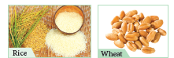
Figure 10.1: Major Cereals
Botanical name : Oryza sativa
Paddy is a semi-aquatic crop and is grown in standing water. It is an important food crop of the world, occupying the second position in terms of area under cultivation and production, next to wheat. Rice is the chief source of carbohydrate.
Origin and Area of cultivation
South East Asia is considered as the center of origin of rice. Earliest evidences of rice cultivation have been found in China, India and Thailand. It is mainly cultivated in Delta and irrigated regions of Tamil Nadu.
Uses
Rice is the easily digestible calorie rich cereal food which is used as a staple food in Southern and North East India. Various rice products such as Flaked rice OPEN BRACKET Aval CLOSE BRACKET, Puffed rice SLASH parched rice OPEN BRACKET Pori CLOSE BRACKET are used as breakfast cereal or as snack food in different parts of India.
Rice bran oil obtained from the rice bran is used in culinary and industrial purposes.
Husks are used as fuel, and in the manufacture of packing material and fertilizer.
Botanical name : Triticum aestivum
Origin and Area of cultivation
Earliest evidence for wheat cultivation comes from Fertile Crescent region. The common cultivated wheat, Triticum aestivum is cultivated for about 7,500 years. Wheat is mostly cultivated in the North Indian states such as Uttar Pradesh, Punjab, Haryana, Rajasthan, Madhya Pradesh and Bihar.
Uses
Wheat is the staple food in Northern India. Wheat flour is suitable to make bread and other bakery products. Processed wheat flour, that has little fibre, is called Maida which is used extensively in making parota, naan and bakery products. Malted wheat is a major raw material for producing alcoholic beverages and nutritive drinks.
Box item
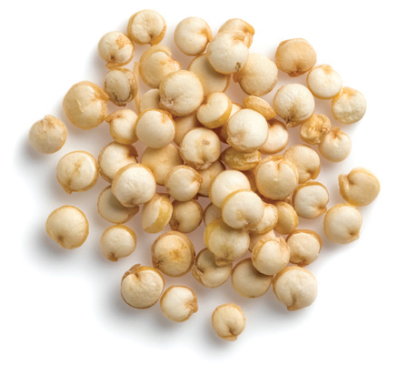
Pseudo cereal - Chenopodium quinoa
PSEUDO-CEREAL
The term pseudo-cereal is used to describe foods that are prepared and eaten as a whole grain, but are botanical outliers from grasses. Example: quinoa. It is actually a seed from the Chenopodium quinoa plant belongs to the family Amaranthaceae. It is a gluten-free, whole-grain carbohydrate, as well as a whole protein OPEN BRACKET meaning it contains all nine essential amino acids CLOSE BRACKET and have been eaten for 6000 years in Andes hill region.
Uses
Most of the corn produced is used as fodder than food. Corn syrup is used in the manufacture of infant foods. Corn is a raw material in the industrial production of alcohol and alcoholic beverages.
The term millet is applied to a variety of very small seeds originally cultivated by ancient people in Africa and Asia. They are gluten free and have less glycemic index.
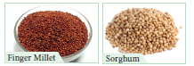
Figure 10.2: Millets
Finger Millet – Ragi
Botanical name : Eleusine coracana
Finger millet is the crop of early introduction from East Africa into India. Ragi is rich in calcium.
Uses
It is used as a staple food in many southern hilly regions of India. Ragi grains are made into porridge and gruel. Ragi malt is the popular nutrient drink. It is used as a source of fermented beverages.
Sorghum
Botanical name : Sorghum vulgare
Sorghum is native to Africa. It is one of the major millets in the world and is rich in calcium and iron.
Uses
It is fed to poultry, birds, pigs and cattle and a source of fermented alcoholic beverage.
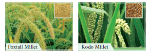
Figure 10.3: Minor Millets
Botanical name : Setaria italica
This is one of the oldest millet used traditionally in India. Which is domesticated first in China about 6000 years. Rich in protein, carbohydrate, vitamin B and C, Potassium and Calcium.
Uses
It supports in strengthening of heart and improves eye sight. Thinai porridge is given to lactating mother.
Kodo Millet
Botanical name : Paspalum scrobiculatum
Kodo millet is originated from West Africa, which is rich in fibre, protein and minerals.
Uses
Kodo millet is ground into flour and used to make pudding. Good diuretic and cures constipation. Helps to reduce obesity, blood sugar and blood pressure.
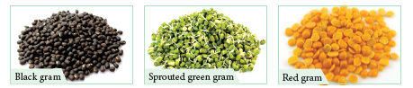
Figure 10.4: Pulses
The word Pulse is derived from the Latin words ‘puls’ or ‘pultis’ meaning “thick soup”. Pulses are the edible seeds that are harvested from the fruits of Fabaceae. They provide vital source of plant-based protein, vitamins and minerals for people around the globe.
Botanical name : Vigna mungo
Origin and Area of cultivation
Black gram is native to India. Earliest archeobotanical evidences record the presence of black gram about 3,500 years ago. It is cultivated as a rain fed crop in drier parts of India. India contributes to 80 percentage of the global production of black gram. Important states growing black gram in India are Uttar Pradesh, Chattisgarh and Karnataka.
Uses
Black gram is eaten whole or split, boiled or roasted or ground into flour. Black gram batter is a major ingredients for the preparation of popular Southern Indian breakfast dishes. Split pulse is used in seasoning Indian curries.
Botanical name : Cajanus cajan
Origin and Area of cultivation: It is the only pulse native to Southern India. It is mainly grown in the states of Maharashtra, Andhra Pradesh, Madhya Pradesh, Karnataka and Gujarat.
Uses
Red gram is a major ingredient of sambar, a characteristic dish of Southern India. Roasted seeds are consumed either salted or unsalted as a popular snack. Young pods are cooked and consumed.
Botanical name : Vigna radiata
Origin and Area of cultivation
Green gram is a native of India and the earliest archaeological evidences are found in the state of Maharashtra. It is cultivated in the states of Madhya Pradesh, Karnataka and Tamil Nadu.
Uses
It can be used as roasted cooked and sprouted pulse. Green gram is one of the ingredients of pongal, a popular breakfast dish in Tamil Nadu. Fried dehulled and broken or whole green gram is used as popular snack. The flour is traditionally used as a cosmetic, especially for the skin.
While walking through a market filled with fresh vegetables like stacks of lady’s finger, mountains of potatoes, pyramids of brinjal, tomatoes, cucurbits, we learn to choose the vegetables that is fresh, tender, ripe and those suit the family taste through experience and cultural practices.
Why do we need to eat vegetables and what do they provide us QUESTION MARK
Vegetables are the important part of healthy eating and provide many nutrients, including potassium, fiber, folic acid and vitamins A, E and C. The nutrients in vegetables are vital for maintenance of our health.
Botanical name : Abelmoschus esculentus
Family: Malvaceae
Origin and Area of cultivation
Lady’s finger is a native of the Tropical Africa. Assam, Maharashtra and Gujarat are the important states where Lady’s finger is grown in abundance. Coimbatore, Dharmapuri and Vellore are the major cultivating regions of Tamil Nadu.
Uses
The fresh and green tender fruits are used as a vegetable. Often they are sliced and dehydrated to conserve them for later use. It has most important nutrients.
Edible fruits are fleshy structures with a pleasant aroma and flavours. Fruits are sources of many nutrients including potassium, dietary fiber, folic acid and vitamins.Depending on the climatic region in which fruit crops grow, they can be classified into temperateOPEN BRACKET apple, pear, plum CLOSE BRACKET and tropical fruits OPEN BRACKET mango, jack, banana CLOSE BRACKET. In this chapter we will study an example of tropical fruit.
Botanical name : Mangifera indica
Family: Anacardiaceae
Origin and Area of cultivation
The mango is the native to Southern Asia, especially Burma and Eastern India. It is the National fruit of India. Major mango producing States are Andhra Pradesh, Bihar, Gujarat and Karnataka. Salem, Krishnagiri, Dharmapuri are the major mango producing districts of Tamil Nadu. Some of the major cultivars of mango in India are Alphonsa, Banganapalli, neelam and malgova.
Uses
Mango is the major table fruit of India, which is rich in beta carotenes. It is utilized in many ways, as dessert, canned, dried and preserves in Indian cuisine. Sour, unripe mangoes are used in chutneys, pickles, side dishes, or may be eaten raw with salt and chili. Mango pulp is made into jelly. Aerated and non-aerated fruit juice is a popular soft drink.
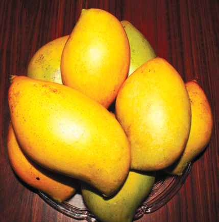
Figure 10.5: Mango
Nuts are simple dry fruits composed of a hard shell and an edible kernel. They are packed with a good source of healthy fats, fibre, protein, vitamins, minerals and antioxidants.
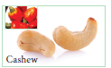
Figure 10.6: Nuts
Cashew nut
Botanical name : Anacardium occidentale
Family: Anacardiaceae
Origin and Area of cultivation
Cashew has originated in Brazil and made its way to India in the 16th century through Portuguese sailors. Cashew is grown in Kerala, Karnataka, Goa, Maharashtra, Tamil Nadu, and Orissa.
Uses
Cashews are commonly used for garnishing sweets or curries, or ground into a paste that forms a base of sauces for curries or some sweets. Roasted and raw kernels are used as snacks.
We experienced sweetness while eating the stems of sugarcane, roots of sugar beet, fruits of apple and while drinking palmyra sap. This is due to the different proportions of sugars found in it. Sugar is the generic name for sweet tasting soluble carbohydrate, which are used in foods and beverages. Sugars found in sugarcane and palmyra make them ideal for efficient extraction to make commercial sugar.
Botanical name : Saccharum officinarum
Family : Poaceae
Origin and Area of cultivation
The cultivated Saccharum officinarum has evolved by repeated back crossing of S.officinarum of New Guinea with wild S.spontaneum of India to improve the quality. All districts except Kanyakumari and Nilgiris of Tamil Nadu cultivate Sugarcane.
Uses
Sugar cane is the raw material for extracting white sugar. Sugarcane supports large number of industries like sugar mills producing refined sugars, distilleries producing liquor grade ethanol and millions of jaggery manufacturing units. Fresh sugarcane juice is a refreshing drink. Molasses is the raw material for the production of ethyl alcohol.
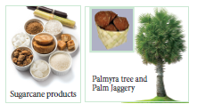
Figure 10.7: Sugars
Palmyra OPEN BRACKET State tree of Tamil Nadu CLOSE BRACKET
Botanical name : Borassus flabellifer
Family: Arecaceae
Origin and Area of cultivation
Palmyra is native to tropical regions of Africa, Asia and New Guinea. Palmyra grows all over Tamil Nadu, especially in coastal districts.
Uses
Exudate from inflorescence axis is collected for preparing palm sugar. Inflorescence is tapped for its sap which is used as health drink.
Sap is processed to get palm jaggery or fermented to give toddy.
Endosperm is used as a refreshing summer food.
Germinated seeds have an elongated embryo surrounded by fleshy scale leaf which is edible.
Why fried foods are tastier than boiled foods QUESTION MARK
There are two kinds of oils namely, essential oils and vegetable oils or fatty oils. The essential oils or volatile oils which possess aroma evaporate or volatilize in contact with air. Any organ of a plant may be the source of essential oil. For example, flowers of Jasmine, fruits of orange and roots of ginger. The vegetable oils or non-volatile oils or fixed oils that do not evaporate. Whole seeds or endosperm form the sources of vegetable oils.
Let us know about few oil seeds
Botanical name : Arachis hypogaea
Family : Fabaceae
Origin and Area of Cultivation:
Groundnut is native of Brazil. Portuguese introduced groundnut into Africa. The Spanish took it to the South East Asia and India via Philippines. In India Gujarat, Andhra Pradesh and Rajasthan are top producers.
Uses
Nuts contain about 45 percentage oil. The kernels are also rich sources of phosphorous and vitamins, particularly thiamine, riboflavin and niacin. It is premium cooking oil because it does not smoke. Lower grade oil is used in manufacture of soaps and lubricants.
Sesame SLASH Gingelly
Botanical name : Sesamum indicum
Family : Pedaliaceae
Origin and Area of cultivation:
Sesamum indicum has originated from Africa.Sesame is cultivated as a dry land crop. West Bengal and Madhya Pradesh are the top producers in India during 2017-18. It is considered as a healthy oil in Southern Indian culture.
Uses
Sesame oil is used for mostly culinary purposes in India. Lower grades are used in manufacture of soaps, in paint industries, as a lubricant and as an illuminant. In India, the oil is the basis of most of the scented oils used in perfumes. Sesame seed snacks are popular throughout India.
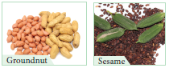
Figure 10.8: Oil Seeds
How about a cup of coffee or tea QUESTION MARK We always entertain our guests with this offer.
All non-alcoholic beverages contain alkaloids that stimulate central nervous system and also possess mild diuretic properties.
Figure 10.9: Beverages
Botanical name : Coffea arabica
Family : Rubiaceae
Why does a student or a driver prefer tea or coffee during night work QUESTION MARK
Origin and Area of cultivation:
Coffea arabica is the prime source of commercial coffee which is native to the tropical Ethiopia An Indian Muslim saint, Baba Budan introduced coffee from Yemen to Mysore.Karnataka is the largest coffee producing state in India followed by Tamil Nadu and Kerala. Tamil Nadu is the largest consumer of coffee in India.
Uses
Drinking coffee in moderation provides the following health benefits:
Caffeine enhances release of acetylcholine in brain, which in turn enhances efficiency. It can lower the incidence of fatty liver diseases, cirrhosis and cancer. It may reduce the risk of type 2 diabetes.
“Aroma attracts everyone” History:
Spices were used extensively throughout the world for several thousands of years. Records of use of garlic and onion dates back 2500 years.
Majority of the spices are native to Mediterranean region, India and South East Asian countries. Spices, especially pepper triggered the search for sea route to India and paved way for the exploratory voyages by Spanish and Portuguese.
Spices are accessory foods mainly used for flavouring during food preparation to improve their palatability. Spices are aromatic plant products and are characterized by sweet or bitter taste. Spices are added in minimal quantities during the cooking process. For example black pepper.
Condiments, on the other hand, are flavouring substances having a sharp taste and are usually added to food after cooking. For example, curry leaves.
The following spices and condiment are discussed in detail.
Spices
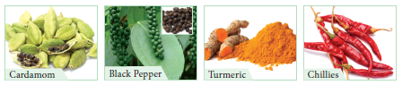
Figure 10.10: Spices
Botanical name : Elettaria cardamomum
Family : Zingiberaceae
Origin and Area of cultivation:
It is indigenous to Southern India and Sri Lanka. Cardamom is called as “Queen of Spices”. In India it is one of the main cash crops cultivated in the Western Ghats, and North Eastern India
Uses
The seeds have a pleasing aroma and a characteristic warm, slightly pungent taste. It is used for flavouring confectionaries, bakery products and beverages. The seeds are used in the preparation of curry powder, pickles and cakes. Medicinally, it is employed as a stimulant and carminative. It is also chewed as a mouth freshener.
Botanical name : Piper nigrum
Family : Piperaceae
Origin and Area of cultivation:
It is indigenous to Western Ghats of India. Pepper is one of the most important Indian spices referred to as the “King of Spices” and also termed as “Black Gold of India”. Kerala, Karnataka and Tamil Nadu are the top producers in India.
The characteristic pungency of the pepper is due to the presence of alkaloid Piperine. There are two types of pepper available in the market namely black and white pepper.
Uses
It is used for flavouring in the preparation of sauces, soups, curry powder and pickles. It is used in medicine as an aromatic stimulant for enhancing salivary and gastric secretions and also as a stomachic. Pepper also enhances the bio-absorption of medicines.
Botanical name : Curcuma longa
Family : Zingiberaceae
Origin and Area of cultivation:
It is indigenous to Southern Asia India is the largest producer, consumer and exporter of turmeric. Erode in TamilNadu is the World’s largest wholesale turmeric market.
Uses
Turmeric is one of the most important and ancient Indian spices and used traditionally over thousands of years for culinary, cosmetic, dyeing and for medicinal purposes.
It is an important constituent of curry powders.
Turmeric is used as a colouring agent in pharmacy, confectionery and food industry.
Rice coloured with turmeric OPEN BRACKET yellow CLOSE BRACKET is considered sacred and auspicious which is used in ceremonies.
It is also used for dyeing leather, fibre, paper and toys.
Curcumin extracted from turmeric is responsible for the yellow colour.
Curcumin is a very good anti-oxidant which may help fight various kinds of cancer. It has anti-inflammatory, anti-diabetic, anti-bacterial, anti-fungal and antiviral activities. It stops platelets from clotting in arteries, which leads to heart attack.
Botanical name : Capsicum annuum,
C. frutescens.
Family : Solanaceae
Origin and Area of cultivation:
Capsicum is native to South America and is popularly known as chillies or red pepper in English.
India is leading producer and exporter. C. annuum and C. frutescens are important cultivated species of chillies.
Uses
The fruits of C.annuum are less pungent than the fruits of C.frutescens. C.annum includes large, sweet bell peppers. Long fruit cultivars of this species are commercially known as ‘Cayenne pepper’ which are crushed, powdered and used as condiment. Chillies are used in manufacture of sauces, curry powders and preparation of pickles. Capsaicin is an active component of chillies. It has pain relieving properties and used in pain relieving balms. Chillies are a good source of Vitamin C, A and E.
Capsaicin is responsible for the pungency or spicy taste of chillies. Pungency of Chillies is measured
in Scoville Heat Units OPEN BRACKET SHU CLOSE BRACKET. World’s hottest chilli, Carolina reaper pepper measures 2200000 SHU. Naga viper chilli is the hottest in India that measures 1349000 SHU. Commonly used cayenne
pepper measures 30000 to 50000 SHU.
Tamarind
Botanical name:
Tamarindus indica
Family : Fabaceae- Caesalpinioideae
Caesalpinioideae
Origin and Area of cultivation: Tamarind is native of tropical African region and was introduced into India several thousand years before. It is cultivated in India, Myanmar, south asian countries and several African and Central American countries. Tamarind has long been used in Africa and in Southern Asia. The name tamarindus is of Arabian origin, which means “dates of India”. OPEN BRACKET tamar – dates; Indus – India CLOSE BRACKET.
Uses
It is used in flavouring sauces in the United States and Mexico. In India, the fruit pulp is major ingredients for many culinary preparations. Sweet tamarinds are sold as table fruits in India imported from Thailand and Malaysia.
Figure 10.11 : Tamarind
Botanically a fiber is a long narrow and thickwalled cell.
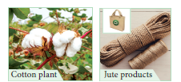
Figure 10.12: Fibres
Botanical name : Gossypium spp.
Family : Malvaceae
Cotton is the world’s most important nonfood commercial crop.
Origin and Area of cultivation:
It is one of the oldest cultivated crops of the world. It has been cultivated for about 8000 years both in new world and in old world. Commercial cotton comes from four cotton species: two from the new world and two from the old world. OPEN BRACKET 1 CLOSE BRACKET G. hirsutum OPEN BRACKET 2 CLOSE BRACKET G.barbadense are the New world species and OPEN BRACKET 3 CLOSE BRACKET G. arboretum OPEN BRACKET 4 CLOSE BRACKET G. herbaceum are the old world species. In India cotton is cultivated in Gujarat, Maharashtra, Andhra Pradesh and Tamil Nadu.
Uses
It is mainly used in the manufacturing of various textile, hosiery products, toys and is also used in hospitals.
Botanical name : Corchorus species.
Family : Malvaceae
Origin and Area of cultivation:
Jute is derived from the two cultivated species OPEN BRACKET 1 CLOSE BRACKET Corchorus capsularis and OPEN BRACKET 2 CLOSE BRACKET C.olitorius is of African origin whereas C. capsularis, is believed to be Indo-Burmese origin. It is an important cultivated commercial crop in Gangetic plains of India and Bangladesh.
Uses
It is one of the largest exported fibre material of India. The jute industry occupies an important place in the national economy of India. Jute is used for ‘safe’ packaging in view of being natural, renewable, bio-degradable and eco-friendly product. It is used in bagging and wrapping textile. About 75 percentage of the jute produced is used for manufacturing sacks and bags. It is also used in manufacture of blankets, rags, curtains etc. It is also being used as a textile fibre in recent years.
The basic need of shelter is obtained from the timber trees.
Figure 10.13: Timber
Botanical name : Tectona grandis
Family: Lamiaceae
Origin and Area of cultivation:
This is native to South east Asia. It is observed wild in Assam. But cultivated in Bengal, Assam, Kerala, Tamil Nadu and North-West India.
Uses
It is one of best timbers of the world. The heartwood is golden yellow to golden brown when freshly sawn, turning darker when exposed to light. Known for its durability as it is immune to the attack of termites and fungi. The wood does not split or crack and is a carpenter friendly wood. It was the chief railway carriage and wagon wood in India. Ship building and bridge-building depends on teakwood. It is also used in making boats, toys, plywood, door frames and doors.
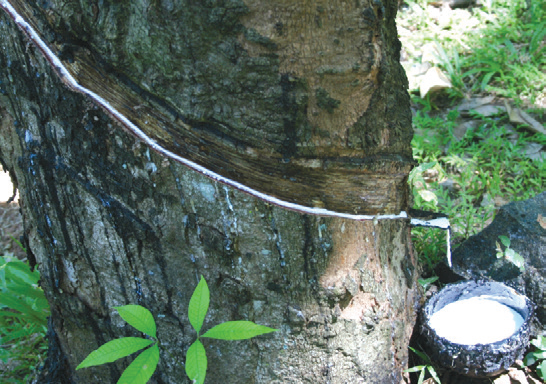
Figure 10.14: Rubber Tree
Botanical name : Hevea brasiliensis
Family : Euphorbiaceae
Origin and Area of cultivation:
It is a native of Brazil and was introduced outside its native range during the colonial period and has become an important cash crop. Asia contributed 90 percentage of the world production. Kerala is the largest producer in India followed by Tamil Nadu.
Uses
Tyre and other automobile parts manufacturing industries consume 70 percentage of the rubber production. Rubber is used in manufacturing footwear, wire and cable insulations, raincoats, household and hospital goods, shock absorbers, belts, sports goods, erasers, adhesives, and rubber-bands Hard rubber is used in the electrical and radio engineering industries Concentrated latex is used for making gloves, balloons and condoms. Foamed latex is used in the manufacture of cushions, pillows and lifebelts.
Box item
Rubber – Vulcanization
Charles Goodyear invented vulcanization in 1839. He found that the defects in rubber articles could be overcome by heating rubber with sulphur under pressure at 1500 C. The process was called vulcanization. The name was given from the Roman God of Fire, Vulcan. Because of this, solid rubber tyres were used for first time in 1867. That is why we smoothly travel on road.
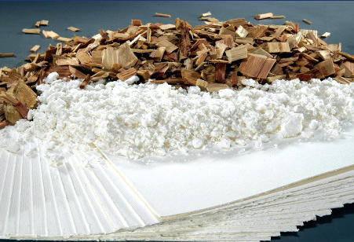
Figure 10.15 : Wood pulp
The term paper is derived from the word ‘papyrus’ a plant OPEN BRACKET Cyperus papyrus CLOSE BRACKET that was used by Egyptians to make paper-like materials. Paper production is a Chinese invention. The Chinese discovered the paper that was prepared from the inner bark of paper mulberry in 105 A.D. For a long time, the art of paper making remained a monopoly of the Chinese until Arabs learned the technique and improved it around 750 A.D. Invention of printing increased the demand for paper.
Manufacture of Wood pulp:
Wood is converted into pulp by mechanical, and chemical processes. Wood of Melia azadirachta, Neolamarkia chinensis, Casuarina spp, Eucalyptus s p p are used for making paper pulp.
Box item
Purified dissolving pulp is used as a basic material in the manufacture of rayon or artificial silk, fabrics, transparent films OPEN BRACKET cellophane, cellulose acetate films CLOSE BRACKET, plastics. The viscose process of making rayon is the most common process.
The ability to perceive colour is a wonderful aspect of human eyes and dyes add colour to the goods we use. They have been in use since the ancient times. The earliest authentic records of dyeing were found in the tomb painting of ancient Egypt. Colourings on mummy cements OPEN BRACKET wrapping CLOSE BRACKET included saffron and indigo. They can also be seen in rock paintings in India.
Henna
Botanical name : Lawsonia inermis
Family : Lythraceae
Origin and Area of cultivation:
It is indigenous to North Africa and South-west Asia. It is grown mostly throughout India, especially in Gujarat, Madya Pradesh and Rajasthan.
Uses
An orange dye ‘Henna’ is obtained from the leaves and young shoots of Lawsonia inermis. The principal colouring matter of leaves ‘lacosone” is harmless and causes no irritation to the skin. This dye has long been used to dye skin, hair and finger nails. It is used for colouring leather, for the tails of horses and in hair-dyes.
Figure 10.16: Naturals Dyes
Traditionally in Southern India, people have been using turmeric, green gram powder, henna, sigaikai and usilai for their skin and hair care. These were mostly home prepared products that are used for grooming. Today, cosmetics have a high commercial value and have become chemical based industrial products. Providing personal care services has become a major industry. In recent years,people have realized the hazards of chemicalbased cosmetics and are turning back to natural products. In this chapter one of the major plants namely Aloe which is used in the cosmetic industries is discussed.
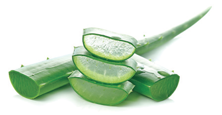
Figure 10.17: Aloe vera
Botanical name : Aloe vera
Family: Asphodelaceae OPEN BRACKET formerly Liliaceae CLOSE BRACKET
Origin and Area of cultivation:
It is a native of Sudan. It is cultivated on a large scale in Rajasthan, Gujarat, Maharashtra, Andhra Pradesh and Tamil Nadu.
Uses
‘Aloin’ OPEN BRACKET a mixture of glucosides CLOSE BRACKET and its gel are used as skin tonic. It has a cooling effect and moisturizing characteristics and hence used in preparation of creams, lotions, shampoos, shaving creams, after shave lotions and allied products. It is used in gerontological applications for rejuvenation of aging skin. Products prepared from aloe leaves have multiple properties such as emollient, antibacterial, antioxidant, antifungal and antiseptic. Aloe vera gel is used in skin care cosmetics.
The word perfume is derived from the Latin word Per OPEN BRACKET through CLOSE BRACKET and fumus OPEN BRACKET to smoke CLOSE BRACKET, meaning through smoke. It refers to the age-old tradition of burning scented woods at religious ceremonies.In early days, when people were less conscious of personal hygiene, essential oils not only masked offensive odours, but also may have acted as antiseptics. Perfumes are added to baths and used for anointing the body.
Perfumes are manufactured from essential oil which are volatile and aromatic. Essential oils are found at different parts of the plant such as leaves, OPEN BRACKET curry leaf, mint CLOSE BRACKET, flowers OPEN BRACKET rose, jasmine CLOSE BRACKET, fruits OPEN BRACKET citrus, straw berry CLOSE BRACKET and wood OPEN BRACKET sandal, eucalyptus CLOSE BRACKET.
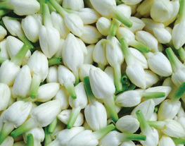
‘Madurai Malli’ is the pride of Madurai has a distinct reputation universally because of its uniqueness and has been given the Geographical Indications OPEN BRACKET GI CLOSE BRACKET mark by the Geographical indication Registry of India. Madurai malli has thick petals with long stalk equal to that of petals and the distinct fragrance is due to the presence of chemicals such as jasmine and alpha terpineol. This makes it easy to distinguish Madurai Malli from other places. This is the second GI tag for Jasmine after ‘Mysore Malli’.
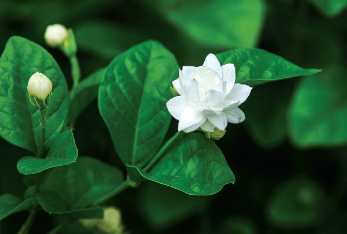
Figure 10.18: Jasmine
Botanical name : Jasminum grandiflorum
Family: Oleaceae
Jasmine, as a floral perfume, ranks next to the rose oil. Major species cultivated on the commercial scale is Jasminum grandiflorum, a native of the north-western Himalayas. In Tamil Nadu, the major jasmine cultivation centres are Madurai and Thovalai of Kanyakumari District. The essential oil ispresent in the epidermal cells of the inner and outer surfaces of both the sepals and petals. One ton of Jasmine blossom yields about 2.5 to 3 kg of essential oil, comprising 0.25 to 3 percentage of the weight of the fresh flower.
Uses
Jasmine flowers have been used since ancient times in India for worship, ceremonial purposes,
incense and fumigants, as well as for making perfumed hair oils, cosmetics and soaps. Jasmine oil is an essential oil that is valued for its soothing, relaxing, antidepressant qualities.
Jasmine blends well with other perfumes. It is much used in modern perfumery and cosmetics and has become popular in air freshners, anti-perspirants, talcum powders, shampoos and deodorants.
India has a rich medicinal heritage. A number of Traditional Systems of Medicine OPEN BRACKET TSM CLOSE BRACKET are practiced in India some of which come from outside India. TSM in India can be broadly classified into institutionalized or documented and non-institutionalized or oral traditions. Institutionalized Indian systems include Siddha and Ayurveda which are practiced for about two thousand years. These systems have prescribed texts in which the symptoms, disease diagnosis, drugs to cure, preparation of drugs, dosage and diet regimes, daily and seasonal regimens. Non- institutional systems, whereas, do not have such records and or practiced by rural and tribal peoples across India. The knowledge is mostly held in oral form. The TSM focus on healthy lifestyle and healthy diet for maintaining good health and disease reversal.
Siddha is the most popular, widely practiced and culturally accepted system in Tamil Nadu. It is based on the texts written by 18 Siddhars. There are different opinions on the constitution of 18 Siddhars. The Siddhars are not only from Tamil Nadu, but have also come from other countries. The entire knowledge is documented in the form of poems in Tamil. Siddha is principally based on the Pancabūta philosophy. According to this system three humors namely Vātam, Pittam and Kapam that are responsible for the health of human beings and any disturbance in the equilibrium of these humors result in ill health. The drug sources of Siddha include plants, animal parts, marine products and minerals. This system specializes in using minerals for preparing drugs with the long shelf-life. This system uses about 800 herbs as source of drugs. Great stress is laid on disease prevention, health promotion, rejuvenation and cure.
Ayurveda supposed to have originated from Brahma. The core knowledge is documented by Charaka, Sushruta and Vagbhata in compendiums written by them. This system is also based on three humor principles namely, Vatha, Pitha and Kapha which would exist in equilibrium for a healthy living. This system Uses more of herbs and few animal parts as drug sources. Plant sources include a good proportion of Himalayan plants. The Ayurvedic Pharmacopoeia of India lists about 500 plants used as source of drugs.
Folk systems survive as an oral tradition among innumerable rural and tribal communities of India. A consolidated study to document the plants used by ethnic communities was launched by the Ministry of Environment and Forests, Government of India in the form of All India Coordinated Research Project on Ethnobiology. As a result about 8000 plant species have been documented which are used for medicinal purposes. The efforts to document in several under-explored and unexplored pockets of India still continue. Major tribal communities in Tamil Nadu who are known for their medicinal knowledge include Irulas, Malayalis, Kurumbas, Paliyans and Kaanis. Some of the important medicinal plants are discussed below.
India is a treasure house of medicinal plants. They are linked to local heritage as well as to global-trade. All institutional systems in India primarily use medicinal plants as drug sources. At present, 90 percentagecollection of medicinal plants is from the non-cultivated sources. Growing demand for herbal products has led to quantum jump in volume of plant materials traded within and across the countries. Increasing demand exerts a heavy strain on the existing resources. Now efforts are being made to introduce cultivation techniques of medicinal plants to the farmers. Medicinal plants play a significant role in providing primary health care services to rural and tribal people. They serve as therapeutic agents as well as important raw materials for the manufacture of traditional and modern medicines. Medicinally useful molecules obtained from plants that are marketed as drugs are called Biomedicines. Medicinal plants which are marketed as powders or in other modified
forms are known as Botanical medicines.
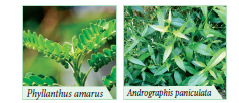
Figure 10.19: Medicinal Plants
Botanical name : Phyllanthus amarus
Family : Euphorbiaceae OPEN BRACKET Now in Phyllanthaceae CLOSE BRACKET
Origin and Area of cultivation:
The plant is a native of Tropical American region and is naturalised in India and other tropical countries. It is not cultivated and is collected from moist places in plains. Phyllanthus maderspatensis is also commonly sold in the medicinal plant markets collected from non-forest are as keelaanelli.
Active principle: Phyllanthin is the major chemical component.
Medicinal importance
Phyllanthus is a well-known hepato-protective plant generally used in Tamil Nadu for the treatment of Jaundice. Research carried out by Dr. S P Thyagarajan and his team from University of Madras has scientifically proved that the extract of P. amarus is effective against hepatitis B virus.
Botanical name : Andrographis paniculata
Family : Acanthaceae
Andrographis paniculata, known as the King of Bitters is traditionally used in Indian systems of medicines.
Active principle:
Andrographolides.
Medicinal importance:
Andrographis is a potent hepatoprotective and is widely used to treat liver disorders. Concoction of Andrographis paniculata and eight other herbs OPEN BRACKET Nilavembu Kudineer CLOSE BRACKET is effectively used to treat malaria and dengue.
Psychoactive Drugs
In the above chapter you have learnt about plants that are used medicinally to treat various diseases. Phytochemicals SLASH drugs from some of the plants alter an individual’s perceptions of mind by producing hallucination are known as psychoactive drugs. These drugs are used in all ancient culture especially by Shamans and by traditional healers. Here we focus on two such plants namely Poppy and Marijuana.
Opium poppy
Family: Papaveraceae
Origin and Area of cultivation:
Opium poppy is native to South Eastern Europe and Western Asia. Madhya Pradesh, Rajasthan and Uttar Pradesh are the licenced states to cultivate opium poppy.
Opium is derived from the exudates of fruits of poppy plants. It was traditionally used to induce sleep and for relieving pain. Opium yields Morphine, a strong analgesic which is used in surgery. However, opium is an addiction forming drug.
Botanical name : Cannabis sativa
Family: Cannabiaceae
Origin and Area of Cultivation:
Marijuana is native to China. States such as Gujarat, Himachal Pradesh, Uttarkand, Uttarpradesh and Madhaya Pradesh have legally permitted to cultivate industrial hempSLASHMarijuana
The active principle in Marijuana is trans-tetrahydrocanabinal OPEN BRACKET THC CLOSE BRACKET. It possess a number of medicinal properties. It is an effective pain reliever and reduces hypertension. THC is used in treating Glaucoma a condition in which pressure develops in the eyes. THC is also used in reducing nausea of cancer patients undergoing radiation and chemotherapy. THC provides relief to bronchial disorders, especially asthma as it dilates bronchial vessels. Because of these medicinal properties, cultivation of cannabis is legalized in some countries. However, prolonged use causes addiction and has an effect on individual’s health and society.
Hence most of the countries have banned its cultivation and use.
Serial Number |
Common Name |
Tamil Name |
Botanical Name |
Family |
Plant part used |
Medicinal Uses |
1. |
Holy basil |
Thulasi |
Ocimum sanctum |
Lamiaceae |
Leaves and Roots |
The leaves are stimulant, antiseptic, antihypertensive and anti-bacterial and expectorant used in bronchitis. Decoction of roots is given as a diaphoretic in malarial fevel. |
2. |
Indian gooseberry |
Nelli |
Phyllanthus emblica |
Phyllanthaceae |
Fruit |
It is a potent rejuvenator and immune modulator. It has a anti-ageing properties. It helps to promote longevity, enhance digestion, treat constipation and reduce fever and cough |
3. |
Indian Acalypha |
Kupaimeni |
Acalypha indica |
Euphorbiaceae |
Leaves |
Used to cure skin diseases caused by ringworms. Powdered leaves are used to cure bedsores and infected wounds. |
4. |
Vilvam |
vilvam |
Aegle marmelos |
Rutaceae |
Fruit |
The unripe fruit is used to treat problems of stomach indigestion. It kills intestinal parasites. |
5. |
Veldt grape |
Pirrndai |
Cissus quadrangulais |
Vitaceae |
Stem and root |
Paste obtained from the powdered stem and root of this plant is used in bone fractures. Whole plant is useful to treat asthma and stomach troubles. |
Drugs come in various forms and can be taken in numerous ways. Some are legal and others are not. Drug abuse and misuse can cause numerous health problems and in serious cases death can occur.
The Narcotics Control Bureau OPEN BRACKET NCB CLOSE BRACKET is the nodal drug law enforcement and intelligence agency of India and is responsible for fighting drug trafficking and the abuse of illegal substances.